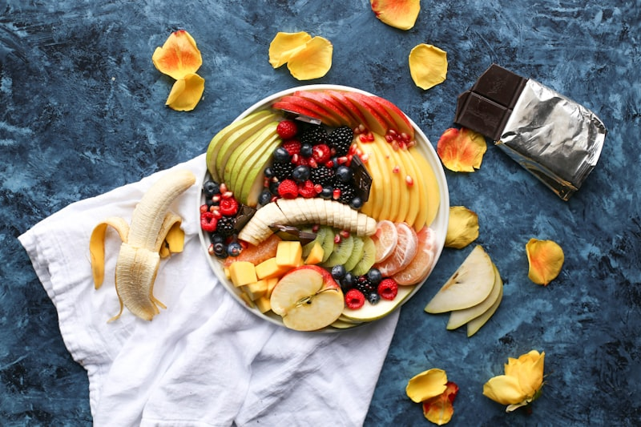

¿Cómo estas recetas queman grasa?
Después de los 40, tu metabolismo cambia. La caída de estrógeno y progesterona hace que tu cuerpo almacene grasa con más facilidad — especialmente en el abdomen. Pero hay una forma natural de revertir esto: la alimentación termogénica.
Los alimentos termogénicos aumentan la temperatura interna de tu cuerpo, obligándolo a gastar más energía (calorías) para hacer la digestión. Esto acelera tu metabolismo de forma natural, sin pastillas ni dietas extremas.
Estas 100 recetas fueron diseñadas con los 10 ingredientes más poderosos para la quema de grasa hormonal:
• Jengibre — Acelera el metabolismo hasta un 20% y reduce la inflamación
• Cúrcuma — Anti-inflamatoria, protege contra la resistencia a la insulina
• Limón — Alcaliniza y estimula la función hepática para eliminar toxinas
• Chía y Linaza — Fibras que estabilizan la glucosa y dan saciedad por horas
• Vegetales verde-oscuros — Ricos en magnesio, mineral clave para la insulina
• Aguacate — Grasas saludables que nutren tus hormonas
• Aceite de coco — Ácido láurico que tu cuerpo convierte en energía, no en grasa
• Té verde — Catequinas que potencian la oxidación de grasa abdominal
• Canela — Mejora la sensibilidad a la insulina hasta en un 29%
Cada receta incluye un consejo hormonal que te explica exactamente cómo ese plato trabaja a favor de tu metabolismo. No estás solo comiendo rico — estás reprogramando tu cuerpo para quemar grasa las 24 horas.

Desayunos Proteicos
Empieza el día activando tu metabolismo con proteína de calidad. Un desayuno proteico estabiliza tu glucosa hasta el almuerzo y evita los antojos de media mañana.
- 1 taza de col rizada o espinaca fresca
- 1/2 manzana verde con cáscara
- Jugo de 1/2 limón
- 1 cucharada de jengibre rallado
- 1 cucharada de semillas de chía
- 200ml de agua de coco
- Hielo al gusto
- Lava bien la col rizada o espinaca y remueve los tallos gruesos.
- Corta la manzana en pedazos, manteniendo la cáscara.
- Coloca todos los ingredientes en la licuadora.
- Bate por 1-2 minutos hasta quedar homogéneo.
- Sirve inmediatamente para aprovechar todos los nutrientes.
- 3 huevos enteros orgánicos
- 1/2 taza de espinaca picada
- 1/4 taza de tomate picado
- 1/4 taza de champiñones fileteados
- 1 cucharadita de cúrcuma en polvo
- Sal rosa y pimienta negra al gusto
- 1 cucharadita de aceite de oliva
- Bate los huevos en un tazón con cúrcuma, sal y pimienta.
- Calienta el aceite en una sartén antiadherente.
- Saltea rápidamente los champiñones y espinaca.
- Vierte los huevos batidos sobre los vegetales.
- Agrega el tomate por encima.
- Cocina a fuego medio-bajo hasta que los bordes se firmen.
- Dobla a la mitad y sirve caliente.
- 1/2 taza de avena en hojuelas
- 1 taza de leche de almendras sin azúcar
- 1/2 manzana picada en cubos
- 1 cucharadita de canela en polvo
- 1 cucharada de pasta de maní natural
- 1 cucharadita de semillas de linaza
- Stevia o xilitol al gusto (opcional)
- Calienta la leche de almendras en una olla.
- Agrega la avena y revuelve constantemente.
- Cocina por 5 minutos a fuego medio hasta espesar.
- Agrega la canela y la manzana picada.
- Apaga el fuego y mezcla la pasta de maní.
- Sirve en un tazón y finaliza con linaza.
- Endulza si es necesario.
- 1 banana madura machacada
- 2 huevos enteros
- 1/3 taza de avena en hojuelas
- 1 cucharadita de polvo de hornear
- 1/2 cucharadita de canela
- Pizca de sal
- Aceite de coco para untar
- Machaca bien la banana con un tenedor.
- Agrega los huevos y mezcla completamente.
- Junta la avena, polvo de hornear, canela y sal.
- Deja la masa reposar por 2 minutos.
- Calienta una sartén con aceite de coco.
- Coloca porciones de la masa formando círculos.
- Cocina 2 minutos de cada lado hasta dorar.
- Sirve con frutas rojas o pasta de maní.
- 1 taza de yogur griego natural desnatado
- 1/2 taza de mix de frutas rojas (fresa, arándano, frambuesa)
- 1 cucharada de granola low carb
- 1 cucharada de semillas de chía
- 1 cucharadita de miel cruda (opcional)
- Menta fresca para decorar
- Coloca el yogur griego en un tazón bonito.
- Lava y seca las frutas rojas.
- Distribuye las frutas sobre el yogur.
- Espolvorea la chía y la granola por encima.
- Rocía con miel si deseas endulzar.
- Decora con hojitas de menta.
- Sirve inmediatamente.

Smoothies y Batidos Termogénicos
Bebidas funcionales que aceleran tu metabolismo desde el primer sorbo. Cada smoothie combina ingredientes termogénicos con proteína para máxima quema de grasa.
- 1 banana congelada
- 2 cucharadas de cacao 100% puro
- 1 scoop de whey protein de vainilla
- 1 taza de leche de almendras sin azúcar
- 1 cucharada de pasta de maní natural
- Hielo al gusto
- Coloca la banana congelada en la licuadora.
- Agrega el cacao, whey protein y leche de almendras.
- Agrega la pasta de maní y el hielo.
- Bate por 1-2 minutos hasta quedar cremoso como milkshake.
- Sirve inmediatamente en un vaso alto.
- 1 scoop de whey protein de vainilla
- 1 taza de leche de coco sin azúcar
- 1 cucharada de almendras picadas
- 1 cucharada de semillas de linaza
- 1/2 banana congelada
- 1 cucharadita de canela
- Hielo al gusto
- Coloca todos los ingredientes en la licuadora.
- Bate por 1 minuto hasta obtener textura cremosa.
- Ajusta la consistencia con más leche si es necesario.
- Sirve inmediatamente decorado con canela.
- 3 cucharadas de semillas de chía
- 1 taza de leche vegetal sin azúcar
- 1 cucharada de cacao en polvo puro
- Stevia o xilitol al gusto
- Frutas rojas para decorar
- Mezcla la chía con la leche vegetal y el cacao en un frasco.
- Endulza con stevia al gusto.
- Revuelve bien y tapa el frasco.
- Refrigera durante al menos 8 horas o toda la noche.
- Por la mañana, revuelve y decora con frutas rojas.
- Sirve frío directamente del frasco.
- 1 batata mediana cortada en rebanadas de 1cm
- 1/2 aguacate maduro
- 1 huevo pochado
- Sal rosa y pimienta
- Semillas de sésamo
- Pizca de pimentón ahumado
- Corta la batata en rebanadas de 1cm de espesor.
- Tuesta en la air fryer a 180°C por 10 minutos o en tostadora (2 ciclos).
- Machaca el aguacate con sal y limón.
- Distribuye el aguacate sobre las tostadas de batata.
- Coloca el huevo pochado encima.
- Finaliza con semillas de sésamo y pimentón.
- 2 cucharadas de almidón de yuca (tapioca)
- 1 huevo entero
- 150g de pollo deshilachado
- 2 cucharadas de queso cottage
- Sal y orégano al gusto
- Mezcla el huevo con la tapioca hasta homogeneizar.
- Calienta una sartén antiadherente a fuego medio.
- Vierte la mezcla formando un disco fino.
- Cocina 2 minutos hasta que la base se firme.
- Rellena con pollo y cottage.
- Dobla a la mitad y cocina 1 minuto más.
- Sirve caliente.
- 1/2 taza de fresas congeladas
- 1/4 de remolacha cruda pequeña
- 1 cucharadita de jengibre rallado
- 1 taza de agua de coco
- Hielo al gusto
- Pela y pica la remolacha en cubos pequeños.
- Coloca todos los ingredientes en la licuadora.
- Bate por 2 minutos hasta quedar homogéneo.
- Sirve inmediatamente para preservar nutrientes.
- 1/2 taza de mango congelado
- 1/4 taza de piña
- 1/2 cucharadita de cúrcuma en polvo
- Pizca de pimienta cayena
- 1/2 taza de leche de coco
- Hielo al gusto
- Coloca el mango y piña congelados en la licuadora.
- Agrega cúrcuma, pimienta cayena y leche de coco.
- Bate hasta obtener textura cremosa.
- Sirve inmediatamente.
- 1/2 taza de arándanos congelados
- 1 taza de espinaca fresca
- 1/4 de aguacate
- 1/2 cucharadita de spirulina en polvo
- 1 taza de agua filtrada
- Hielo al gusto
- Coloca la espinaca y el agua en la licuadora primero.
- Agrega los arándanos, aguacate y spirulina.
- Bate por 2 minutos hasta quedar homogéneo.
- Sirve inmediatamente.
- 2 cucharadas de cacao puro
- 1 banana congelada
- 1 scoop de whey protein
- 1 cucharada de pasta de maní
- 1 taza de leche de almendras sin azúcar
- Hielo al gusto
- Coloca todos los ingredientes en la licuadora.
- Bate por 1-2 minutos hasta quedar cremoso.
- Ajusta dulzor con stevia si es necesario.
- Sirve inmediatamente.
- 1/2 taza de café helado fuerte
- 1/2 banana congelada
- 2 cucharadas de avena
- 1/2 cucharadita de canela
- 1 taza de leche vegetal
- Hielo al gusto
- Prepara el café fuerte y déjalo enfriar completamente.
- Coloca todos los ingredientes en la licuadora.
- Bate hasta quedar cremoso y frío.
- Sirve inmediatamente.

Panes y Pasteles Low Carb
¿Amas el pan pero quieres quemar grasa? Estas versiones inteligentes usan harinas alternativas que no disparan tu insulina. Listos en minutos.
- 3 cucharadas de harina de coco
- 2 huevos enteros
- 1 cucharadita de polvo de hornear
- Pizca de sal rosa
- 1 cucharadita de aceite de coco
- Mezcla la harina de coco, huevos, polvo de hornear y sal en un tazón.
- Deja reposar la masa 2 minutos para que la harina absorba.
- Calienta el aceite de coco en una sartén antiadherente.
- Vierte la masa y forma un disco.
- Cocina 3 minutos de cada lado a fuego bajo.
- Sirve caliente, perfecto para sándwiches saludables.
- 3 huevos (claras y yemas separadas)
- 3 cucharadas de queso crema (cream cheese)
- 1/4 cucharadita de polvo de hornear
- Pizca de sal
- Precalienta el horno a 150°C.
- Bate las claras a punto de nieve con sal.
- En otro tazón, mezcla yemas con cream cheese y polvo de hornear.
- Incorpora las claras a la mezcla de yemas con movimientos suaves.
- Forma discos en bandeja forrada con papel manteca.
- Hornea 25 minutos hasta dorar levemente.
- Deja enfriar antes de retirar.
- 2 bananas maduras
- 2 huevos enteros
- 1 taza de harina integral
- 1 cucharada de miel pura
- 1 cucharadita de canela
- 1 cucharadita de polvo de hornear
- 1 cucharada de aceite de coco
- Precalienta el horno a 180°C.
- Machaca las bananas y mezcla con huevos y miel.
- Agrega harina, canela, polvo de hornear y aceite.
- Mezcla hasta obtener masa homogénea.
- Vierte en molde engrasado.
- Hornea por 35-40 minutos hasta que un palillo salga limpio.
- Deja enfriar antes de desmoldar.
- 1 taza de avena en hojuelas
- 1 manzana rallada
- 2 huevos enteros
- 1 cucharadita de canela
- 1 cucharadita de polvo de hornear
- 2 cucharadas de miel o xilitol
- Pizca de sal
- Precalienta el horno a 180°C.
- Mezcla todos los ingredientes en un tazón.
- Distribuye en moldes de muffin engrasados (rinde 6 unidades).
- Hornea por 20-25 minutos hasta dorar.
- Deja enfriar antes de desmoldar.
- Congela los extras para la semana.
- 1/2 taza de almidón de yuca
- 1/4 taza de queso cottage
- 1 huevo entero
- 1 cucharada de aceite de oliva
- Sal al gusto
- Precalienta el horno a 200°C.
- Mezcla todos los ingredientes hasta obtener masa pegajosa.
- Forma bolitas pequeñas con las manos húmedas.
- Coloca en bandeja forrada con papel manteca.
- Hornea por 15-20 minutos hasta dorar.
- Sirve caliente.

Snacks Matutinos Express
Opciones portátiles y rápidas para esas mañanas apuradas. Prepáralos el fin de semana y tendrás snacks saludables toda la semana.
- 6 huevos enteros
- Páprika ahumada
- Sal rosa del Himalaya
- Pimienta negra recién molida
- Coloca los huevos en una olla con agua fría.
- Lleva a ebullición y cocina exactamente 10 minutos.
- Transfiere a un baño de agua con hielo por 5 minutos.
- Pela y corta a la mitad.
- Condimenta con páprika, sal rosa y pimienta.
- Guarda en recipiente hermético en la nevera hasta 5 días.
- 1/4 taza de almendras crudas
- 2 nueces de Brasil
- 1/4 taza de nueces
- 1 cucharada de semillas de calabaza
- Mezcla todas las nueces y semillas en un recipiente.
- Prepara porciones de 30g en bolsitas individuales.
- Guarda en lugar seco y fresco.
- Consume una porción como snack de media mañana.
- 1 manzana verde mediana
- 1 cucharada de pasta de maní natural (sin azúcar)
- Canela en polvo al gusto
- Lava la manzana y córtala en rebanadas.
- Coloca en un plato y espolvorea canela.
- Sirve con la cucharada de pasta de maní al lado.
- Unta cada rebanada antes de comer.
- 200g de queso cottage
- 1/2 taza de frutas rojas frescas o congeladas
- 1/2 cucharadita de canela
- Stevia al gusto (opcional)
- Coloca el cottage en un tazón.
- Agrega las frutas rojas por encima.
- Espolvorea canela.
- Endulza con stevia si lo deseas.
- Consume como snack de media mañana.
- 1 taza de dátiles sin hueso
- 1/2 taza de avena
- 2 cucharadas de cacao en polvo puro
- 2 cucharadas de coco rallado
- 1 cucharada de aceite de coco derretido
- Procesa los dátiles en el procesador hasta formar pasta.
- Agrega avena, cacao y aceite de coco.
- Procesa hasta que se forme una masa compacta.
- Forma 15 bolitas con las manos húmedas.
- Pasa cada bolita en coco rallado.
- Refrigera por 30 minutos antes de consumir.
- Guarda en recipiente hermético en la nevera hasta 2 semanas.

Almuerzos Turbo con Pollo y Atún
La fórmula del plato perfecto: 50% vegetales, 25% proteína magra, 25% carbohidrato inteligente. Estas recetas te enseñan a montar almuerzos que queman grasa.
- 1 taza de quinoa cocida
- 150g de pechuga de pollo a la parrilla en tiras
- 1 taza de mix de hojas (lechuga, rúcula, espinaca)
- 1/2 taza de garbanzo horneado
- 1/2 zanahoria rallada
- 1/4 de aguacate fileteado
- Salsa: tahini, limón, ajo, agua
- Cocina la quinoa según las instrucciones del empaque.
- Condimenta el pollo con sal, pimienta y ásalo a la parrilla.
- Hornea el garbanzo con páprika por 20 min a 200°C.
- Prepara la salsa batiendo tahini, limón, ajo y agua hasta cremoso.
- Monta el bowl: base de hojas, quinoa a un lado.
- Distribuye el pollo, garbanzo, zanahoria y aguacate.
- Rocía con la salsa tahini y sirve.
- 1 lata de atún en agua (escurrido)
- 2 tazas de mix de hojas verdes
- 1 tomate cortado en cubos
- 5 aceitunas negras fileteadas
- 1/4 de cebolla morada en rodajas finas
- 1 cucharada de aceite de oliva extra virgen
- Jugo de 1/2 limón
- Orégano seco al gusto
- Lava bien todas las hojas y sécalas.
- Coloca las hojas como base en un tazón grande.
- Distribuye el atún deshilachado sobre las hojas.
- Agrega tomate, aceitunas y cebolla morada.
- Mezcla aceite de oliva, limón y orégano como salsa.
- Rocía la ensalada con la salsa.
- Mezcla delicadamente y sirve inmediatamente.
- 2 filetes de tilapia (300g)
- Jugo de 1 limón
- 2 dientes de ajo machacados
- 1 calabacín en rodajas
- 1 pimiento rojo en tiras
- 1 tomate en rodajas
- Sal rosa, pimienta y hierbas finas
- Aceite de oliva
- Condimenta los filetes con limón, ajo, sal y pimienta.
- Deja marinar por 15 minutos.
- Dispone las legumbres en una bandeja para hornear.
- Rocía con aceite de oliva y condimenta con hierbas.
- Coloca los filetes sobre las legumbres.
- Hornea a 200°C por 20 minutos.
- Sirve caliente con ensalada verde al lado.
- 2 pechugas de pollo
- 2 cucharadas de mostaza Dijon
- 1 cucharada de miel pura
- 2 dientes de ajo picados
- Sal, pimienta y orégano
- 1 cucharada de aceite de oliva
- Mezcla mostaza, miel, ajo y aceite de oliva en un tazón.
- Marina las pechugas en esta salsa por al menos 30 minutos.
- Calienta la parrilla o sartén grill a fuego alto.
- Asa el pollo 5-6 minutos de cada lado hasta dorar.
- Deja reposar 3 minutos antes de cortar.
- Sirve con ensalada verde o vegetales al vapor.
- 200g de pechuga de pollo en cubos
- 2 tazas de brócoli en floretes
- 1 cucharadita de jengibre rallado
- 2 dientes de ajo picados
- 2 cucharadas de salsa de soya light
- 1 cucharada de aceite de sésamo
- Calienta el aceite de sésamo en un wok a fuego alto.
- Saltea el pollo hasta dorar por fuera (4 minutos).
- Agrega ajo y jengibre, cocina 30 segundos.
- Incorpora el brócoli y saltea 3 minutos.
- Agrega la salsa de soya y mezcla bien.
- Cocina 2 minutos más sin tapar.
- Sirve caliente sobre arroz integral o cauliflower rice.
- 200g de pechuga de pollo en cubos
- 1/2 taza de leche de coco light
- 1 cucharada de curry en polvo
- 1 pimiento rojo en cubos
- 1 calabacín en medias lunas
- 1 cebolla picada
- 2 dientes de ajo
- Cilantro fresco
- Saltea cebolla y ajo en una olla con aceite de oliva.
- Agrega el pollo y dora por 4 minutos.
- Incorpora curry, pimiento y calabacín.
- Vierte la leche de coco y mezcla bien.
- Cocina a fuego medio por 15 minutos.
- Finaliza con cilantro fresco picado.
- Sirve con arroz integral.
- 2 tazas de lechuga romana picada
- 150g de pollo a la parrilla en tiras
- Crutones de batata (batata en cubos horneados)
- Salsa: yogur griego, mostaza Dijon, limón, ajo
- Queso parmesano rallado (1 cucharada)
- Corta batata en cubitos y hornea a 200°C por 15 min.
- Asa el pollo a la parrilla y córtalo en tiras.
- Prepara la salsa mezclando yogur, mostaza, limón y ajo.
- Coloca la lechuga como base.
- Distribuye pollo, crutones de batata y parmesano.
- Rocía con la salsa y sirve.
- 1 tortilla integral grande
- 150g de pollo deshilachado
- 1/2 zanahoria rallada
- 1/4 pepino en bastones
- 2 cucharadas de guacamole
- Hojas de lechuga
- Sal y limón al gusto
- Calienta ligeramente la tortilla en sartén seca.
- Unta el guacamole sobre toda la superficie.
- Coloca las hojas de lechuga como base.
- Distribuye el pollo, zanahoria y pepino.
- Enrolla firmemente doblando los bordes.
- Corta a la mitad en diagonal.
- Envuelve en papel aluminio si es para llevar.

Almuerzos con Carne Roja y Pescado
Proteínas de alto valor biológico que nutren tus músculos y aceleran tu metabolismo. La carne roja magra y el pescado son aliados poderosos cuando se preparan bien.
- 200g de lomo de res magro
- Chimichurri: perejil, ajo, orégano, aceite de oliva, vinagre
- Sal rosa y pimienta
- Ensalada verde para acompañar
- Retira la carne de la nevera 20 minutos antes.
- Condimenta con sal rosa y pimienta.
- Prepara chimichurri picando perejil, ajo y orégano finamente, mezcla con aceite y vinagre.
- Calienta la parrilla a fuego alto.
- Asa el filete 4 minutos de cada lado (punto medio).
- Deja reposar 3 minutos antes de cortar.
- Sirve con chimichurri por encima y ensalada verde.
- 300g de carne molida magra (95% magra)
- 1 huevo entero
- 2 cucharadas de avena
- 1 cebolla picada finamente
- 2 dientes de ajo
- Salsa de tomate natural
- Albahaca fresca
- Sal y pimienta
- Mezcla carne, huevo, avena, mitad de la cebolla, sal y pimienta.
- Forma bolitas del tamaño de una nuez.
- En una olla, saltea el resto de cebolla y ajo.
- Agrega la salsa de tomate y cocina 5 min.
- Coloca las albóndigas en la salsa.
- Cocina tapado a fuego bajo por 20 minutos.
- Finaliza con albahaca fresca.
- 200g de carne molida magra
- Hojas de lechuga americana (como tortilla)
- 1 tomate picado
- 1/4 cebolla morada picada
- 1/2 aguacate en cubos
- Comino, páprika y chile en polvo
- Limón y cilantro
- Condimenta la carne con comino, páprika y chile.
- Cocina en sartén hasta dorar completamente.
- Lava y seca las hojas de lechuga grandes.
- Rellena cada hoja con carne, tomate, cebolla y aguacate.
- Exprime limón por encima y agrega cilantro.
- Sirve inmediatamente.
- 200g de bife de lomo
- 1 batata mediana en cubos
- 1 calabacín en rodajas
- 1 pimiento en tiras
- 1 cebolla en gajos
- Aceite de oliva, romero y tomillo
- Sal rosa y pimienta
- Precalienta el horno a 200°C.
- Corta las legumbres y colócalas en bandeja.
- Rocía con aceite de oliva y hierbas, hornea 25 min.
- Condimenta la carne y ásala a la parrilla.
- Deja reposar antes de cortar en tajadas.
- Sirve la carne sobre las legumbres asadas.
- 200g de carne molida magra
- Hojas de lechuga como envoltorio
- 1 rodaja de tomate
- Cebolla caramelizada (en sartén con poquita miel)
- 1 cucharada de mostaza
- Queso mozzarella light (opcional)
- Forma un disco con la carne condimentada con sal y pimienta.
- Cocina en sartén caliente 4 min de cada lado.
- Coloca el queso encima para derretir los últimos 30 segundos.
- Arma la hamburguesa usando hojas de lechuga como pan.
- Agrega tomate, cebolla caramelizada y mostaza.
- Sirve inmediatamente.
- 1 filete de salmón (180g)
- 1 manojo de espárragos verdes
- Jugo de 1 limón
- 2 dientes de ajo
- Aceite de oliva
- Sal rosa y pimienta
- Condimenta el salmón con limón, ajo, sal y pimienta.
- Deja marinar 10 minutos.
- Recorta los tallos duros de los espárragos.
- Asa el salmón con la piel hacia abajo 4-5 minutos.
- Voltea y cocina 3 minutos más.
- Asa los espárragos en la misma parrilla con aceite de oliva.
- Sirve juntos con limón extra.
- 2 filetes de pescado blanco (tilapia, merluza)
- 1 calabacín en rodajas finas
- 1 tomate en rodajas
- Cebolla en aros finos
- Hierbas frescas (albahaca, perejil)
- Aceite de oliva, limón, sal y pimienta
- Precalienta el horno a 200°C.
- Corta 2 piezas grandes de papel aluminio.
- Coloca las legumbres como base en cada papel.
- Pon el filete de pescado encima.
- Rocía con aceite de oliva, limón y hierbas.
- Cierra el papillote sellando bien los bordes.
- Hornea 15-18 minutos.
- Abre en el plato para disfrutar el aroma.
- 200g de camarones limpios
- 2 tazas de mix de hojas verdes
- 1/2 pepino en rodajas
- Tomates cherry
- Aceitunas negras
- Queso feta light (opcional)
- Vinagreta de limón y hierbas
- Saltea los camarones con ajo y aceite de oliva 3 min.
- Deja enfriar ligeramente.
- Monta la base con hojas verdes.
- Distribuye pepino, tomates cherry y aceitunas.
- Coloca los camarones por encima.
- Agrega queso feta si lo deseas.
- Rocía con vinagreta y sirve.
- 300g de pescado blanco firme en cubos
- Jugo de 4-5 limones
- 1/2 cebolla morada en plumas
- 1 ají picante (al gusto)
- Cilantro fresco picado
- Sal y pimienta
- 1 batata cocida como acompañamiento
- Corta el pescado en cubos de 2cm.
- Cubre con jugo de limón en un tazón de vidrio.
- Refrigera por 30-45 minutos, revolviendo cada 10 min.
- Agrega cebolla, ají y cilantro.
- Condimenta con sal y pimienta.
- Sirve frío sobre hojas de lechuga.
- Acompaña con rodajas de batata cocida.
- 1 filete de atún fresco (200g)
- Semillas de ajonjolí (sésamo) blanco y negro
- Salsa de soya light
- Jengibre rallado
- Aceite de sésamo
- Ensalada de pepino y wakame
- Marina el atún en salsa de soya y jengibre por 15 min.
- Cubre las superficies del filete con semillas de ajonjolí.
- Calienta una sartén con aceite de sésamo a fuego muy alto.
- Sella el atún 45 segundos de cada lado (dorado afuera, rosado adentro).
- Corta en láminas con cuchillo afilado.
- Sirve con ensalada de pepino y wakame.

Almuerzos Vegetarianos y Sopas
Opciones 100% vegetales que prueban que puedes quemar grasa sin carne. Ricas en fibra, proteína vegetal y antioxidantes para tu equilibrio hormonal.
- 6 huevos enteros
- 1 taza de espinaca picada
- 1 tomate picado
- 1/2 cebolla picada
- 1/4 taza de queso cottage
- Sal, pimienta y nuez moscada
- Precalienta el horno a 180°C.
- Saltea cebolla, espinaca y tomate por 3 minutos.
- Bate los huevos con cottage, sal, pimienta y nuez moscada.
- Coloca los vegetales salteados en un molde engrasado.
- Vierte la mezcla de huevos por encima.
- Hornea por 25-30 minutos hasta dorar.
- Deja reposar 5 minutos, corta en rebanadas y sirve.
- 2 berenjenas grandes
- 1/2 taza de quinoa cocida
- 1/4 taza de tomate seco picado
- Aceitunas negras picadas
- 2 cucharadas de queso cottage
- Albahaca fresca
- Aceite de oliva
- Corta las berenjenas a la mitad a lo largo.
- Hornea boca abajo a 200°C por 20 minutos.
- Con una cuchara, retira parte de la pulpa.
- Mezcla la pulpa con quinoa, tomate seco, aceitunas y cottage.
- Rellena las berenjenas con la mezcla.
- Hornea 10 minutos más hasta gratinar.
- Finaliza con albahaca fresca y aceite de oliva.
- 1 lata de garbanzo cocido (escurrido)
- 2 tazas de espinaca fresca
- 1/2 taza de salsa de tomate natural
- 1/2 taza de leche de coco light
- 1 cucharada de curry en polvo
- 1 cebolla picada
- 2 dientes de ajo
- Saltea cebolla y ajo en aceite de oliva.
- Agrega el curry y cocina 1 minuto para activar aromas.
- Incorpora la salsa de tomate y leche de coco.
- Agrega el garbanzo y cocina 10 minutos.
- Junta la espinaca y cocina 2 minutos más hasta marchitar.
- Sirve caliente con arroz integral o solo.
- 1 taza de lentejas cocidas
- 1 tomate picado
- 1/2 pepino en cubos
- 1/4 cebolla morada picada
- Menta fresca picada
- Jugo de 1 limón
- 2 cucharadas de aceite de oliva
- Sal y comino
- Cocina las lentejas hasta tiernas pero firmes.
- Mezcla con tomate, pepino, cebolla y menta.
- Prepara vinagreta con limón, aceite, sal y comino.
- Rocía sobre la ensalada y mezcla bien.
- Sirve tibia o a temperatura ambiente.
- 300g de tofu firme
- 2 cucharadas de salsa de soya
- 1 cucharadita de jengibre rallado
- 2 dientes de ajo picados
- 1 cucharadita de aceite de sésamo
- Semillas de sésamo y cebollín
- Prensa el tofu para eliminar exceso de agua (20 min con peso).
- Corta en rebanadas de 1cm.
- Marina en salsa de soya, jengibre y ajo por 15 minutos.
- Calienta la parrilla o sartén grill.
- Asa 3-4 minutos de cada lado hasta dorar.
- Finaliza con aceite de sésamo, semillas y cebollín.
- 1 calabacín picado
- 2 zanahorias picadas
- 1 cebolla
- 2 dientes de ajo
- 1 tomate
- 2 tallos de apio
- 1 litro de caldo de legumbres casero
- Hierbas frescas (perejil, cilantro)
- Saltea cebolla y ajo en una olla con aceite de oliva.
- Agrega todas las legumbres picadas.
- Cubre con el caldo de legumbres.
- Cocina por 25 minutos hasta que todo ablande.
- Condimenta con hierbas frescas.
- Sirve caliente, puede batir la mitad para crema.
- 3 tazas de col rizada fileteada
- 2 papas medianas
- 150g de salchicha de pollo light
- 1 cebolla picada
- 2 dientes de ajo
- 1 litro de caldo de pollo casero
- Aceite de oliva
- Saltea cebolla y ajo en una olla honda.
- Agrega las papas en cubos y cubre con caldo.
- Cocina 15 minutos hasta ablandar.
- Machaca algunas papas para espesar.
- Agrega la salchicha fileteada y cocina 5 min.
- Junta la col fileteada finamente.
- Cocina apenas 3 minutos para mantener verde.
- Finaliza con hilo de aceite de oliva.

Postres y Dulces con Cacao
¿Pensaste que quemar grasa significaba abandonar el chocolate? Estas recetas usan cacao puro — rico en antioxidantes y magnesio — para satisfacer tu antojo sin culpa.
- 1 aguacate maduro
- 2 cucharadas de cacao en polvo 100%
- 1 scoop de whey protein de chocolate
- 3 cucharadas de leche de almendras
- Stevia o xilitol al gusto
- 1 cucharadita de esencia de vainilla
- Pizca de sal
- Corta el aguacate y remueve el hueso.
- Coloca la pulpa en el procesador.
- Agrega cacao, whey, leche de almendras.
- Bate hasta obtener consistencia cremosa y homogénea.
- Agrega endulzante y vainilla, ajusta el sabor.
- Distribuye en vasitos individuales.
- Refrigera al menos 2 horas.
- Sirve helado con raspas de chocolate 70%.
- 1 taza de dátiles sin hueso
- 1/2 taza de maní tostado
- 1/2 taza de nuez de cajú
- 1/4 taza de almendras
- 2 cucharadas de pasta de maní
- 1 cucharada de aceite de coco derretido
- 2 cucharadas de cacao en polvo
- Pizca de sal marina
- Procesa los dátiles hasta formar una pasta.
- Pica groseramente las nueces y maníes.
- Mezcla todo con pasta de maní, aceite de coco y cacao.
- Forra un molde pequeño con papel manteca.
- Presiona bien la mezcla en el molde.
- Refrigera 30 minutos hasta firmar.
- Corta en 10 barritas rectangulares.
- Guarda en recipiente hermético hasta 2 semanas.
- 1 batata mediana
- 1 remolacha mediana
- 1 calabacín grande
- 2 cucharadas de aceite de oliva
- Sal rosa al gusto
- Páprika ahumada
- Romero seco
- Precalienta el horno a 180°C.
- Lava y seca las legumbres, corta en rebanadas ultra-finas.
- Rocía con aceite de oliva en un tazón.
- Condimenta con sal, páprika y romero.
- Dispone en bandejas forradas sin sobreponer.
- Hornea 25-30 minutos, volteando a la mitad.
- Retira cuando estén crujientes y dorados.
- Deja enfriar completamente antes de guardar.
- 3 cucharadas de cacao 70% en polvo
- 3 cucharadas de crema de leche light
- 1 cucharada de pasta de maní natural
- Endulzante al gusto (xilitol o stevia)
- Cacao en polvo para enrollar
- Mezcla cacao, crema de leche y endulzante en una olla.
- Cocina a fuego bajo revolviendo constantemente.
- Agrega la pasta de maní y sigue revolviendo.
- Cocina hasta que la masa se despegue del fondo.
- Deja enfriar completamente.
- Forma bolitas con las manos untadas en aceite de coco.
- Enrolla cada bolita en cacao en polvo.
- Refrigera 1 hora antes de consumir.
- 1 lata de frijoles negros (escurridos y lavados)
- 3 cucharadas de cacao en polvo puro
- 2 huevos enteros
- 2 cucharadas de miel pura
- 1 cucharadita de polvo de hornear
- Pizca de sal
- Nueces picadas para decorar
- Precalienta el horno a 180°C.
- Coloca frijoles, cacao, huevos, miel y sal en la licuadora.
- Bate hasta obtener masa homogénea.
- Agrega polvo de hornear y mezcla rápidamente.
- Vierte en molde engrasado.
- Esparce nueces picadas por encima.
- Hornea 25-30 minutos hasta firmar.
- Deja enfriar antes de cortar en cuadrados.
- 1 taza de dátiles sin hueso
- 3 cucharadas de cacao en polvo puro
- 1/4 taza de coco rallado
- 1 cucharada de aceite de coco derretido
- Cacao extra para rebozar
- Procesa los dátiles hasta formar pasta.
- Agrega cacao, coco rallado y aceite de coco.
- Procesa hasta mezclar bien.
- Forma bolitas del tamaño de una nuez.
- Reboza en cacao en polvo.
- Refrigera 30 minutos antes de consumir.
- 1 banana madura
- 1 huevo entero
- 2 cucharadas de avena
- 1 cucharada de cacao en polvo
- 1 cucharada de pasta de maní
- Frutas rojas para rellenar
- Machaca la banana y mezcla con huevo, avena y cacao.
- Calienta sartén antiadherente con aceite de coco.
- Vierte la masa formando un disco.
- Cocina 2 minutos de cada lado.
- Rellena con pasta de maní y frutas rojas.
- Dobla y sirve caliente.
- 3 bananas maduras congeladas en rodajas
- 2 cucharadas de cacao en polvo puro
- 2-3 cucharadas de leche vegetal
- Toppings: nueces, coco rallado, frutas
- Corta las bananas en rodajas y congélalas por al menos 4 horas.
- Coloca las rodajas congeladas en el procesador.
- Agrega cacao y leche vegetal.
- Procesa, parando para raspar los laterales.
- Continúa hasta obtener textura cremosa como helado.
- Sirve inmediatamente con tus toppings favoritos.

Postres con Frutas y Snacks Portátiles
Las frutas son el dulce de la naturaleza. Estas recetas transforman frutas simples en postres espectaculares, y los snacks portátiles te acompañan a donde vayas.
- 6 fresas grandes
- 1 banana en rodajas gruesas
- 1/2 taza de uvas
- 30g de chocolate 70% cacao
- Palitos de brocheta
- Monta las frutas intercalando en palitos de brocheta.
- Derrite el chocolate en baño María o microondas.
- Rocía el chocolate derretido sobre las brochetas.
- Coloca en bandeja forrada con papel manteca.
- Congela por 20 minutos hasta que el chocolate endurezca.
- Sirve como postre o snack.
- 2 manzanas rojas grandes
- 2 cucharadas de avena
- 1 cucharadita de canela
- 1 cucharada de miel pura
- 1 cucharada de nueces picadas
- Precalienta el horno a 180°C.
- Remueve el centro de las manzanas con un cuchillo.
- Mezcla avena, canela, miel y nueces.
- Rellena las manzanas con la mezcla.
- Coloca en bandeja para hornear con un poco de agua.
- Hornea 30 minutos hasta que ablanden.
- Sirve caliente — el aroma es irresistible.
- 2 sobres de gelatina sin sabor
- 2 tazas de jugo natural de frutas (sin azúcar)
- 1 taza de frutas frescas picadas
- Stevia al gusto (opcional)
- Hidrata la gelatina en 1/2 taza de agua fría por 5 min.
- Calienta el jugo de frutas sin dejar hervir.
- Disuelve la gelatina en el jugo caliente.
- Endulza con stevia si es necesario.
- Distribuye las frutas picadas en vasitos.
- Vierte la mezcla de gelatina sobre las frutas.
- Refrigera por al menos 4 horas hasta cuajar.
- 1/2 taza de piña en cubos
- 1/2 mango en cubos
- 1/2 papaya en cubos
- Pulpa de 1 maracuyá
- Jugo de 1 naranja
- Menta fresca picada
- Corta todas las frutas en cubos del mismo tamaño.
- Mezcla en un tazón grande.
- Exprime el jugo de naranja sobre las frutas.
- Agrega la pulpa de maracuyá con sus semillas.
- Espolvorea menta fresca picada.
- Refrigera 15 minutos antes de servir.
- 2 bananas maduras (con cáscara)
- 1/2 cucharadita de canela
- 1/2 taza de yogur griego natural
- 1 cucharada de miel (opcional)
- Corta las bananas a la mitad a lo largo (sin pelar).
- Asa en la parrilla o sartén grill 3 min de cada lado.
- Retira la cáscara y coloca en el plato.
- Espolvorea canela por encima.
- Sirve con yogur griego al lado.
- Rocía miel si lo deseas.
- 1 taza de avena en hojuelas
- 1/2 taza de coco rallado
- 2 cucharadas de miel o xilitol
- 2 cucharadas de pasta de maní
- 1 cucharada de semillas de chía
- Mezcla todos los ingredientes en un tazón.
- Amasa con las manos hasta que se compacte.
- Forma bolitas del tamaño de una nuez.
- Reboza en coco rallado extra.
- Refrigera 30 minutos.
- Guarda en recipiente hermético hasta 10 días.
- 2 pepinos grandes
- 1/2 taza de hummus casero o comprado
- Páprika ahumada para decorar
- Semillas de sésamo
- Lava los pepinos y córtalos en bastones.
- Coloca el hummus en un tazón central.
- Espolvorea páprika y sésamo sobre el hummus.
- Sirve los bastones alrededor para dippear.
- 4 rebanadas de pechuga de pavo ahumada
- 1/2 aguacate en tiras
- Hojas de rúcula
- Queso crema light
- Pimienta negra
- Extiende cada rebanada de pavo.
- Unta una capa fina de queso crema.
- Coloca rúcula y una tira de aguacate.
- Enrolla firmemente.
- Asegura con un palillo si es necesario.
- Sirve como snack o aperitivo.
- 2 tazas de edamame congelado (con vaina)
- Sal de mar gruesa
- 1 cucharadita de aceite de sésamo (opcional)
- Hierve agua con sal en una olla.
- Agrega el edamame y cocina 4 minutos.
- Escurre y transfiere a un tazón.
- Rocía con aceite de sésamo si lo deseas.
- Espolvorea sal de mar gruesa.
- Come presionando la vaina para extraer los granos.
- 2 tostadas de arroz integral
- 1/2 aguacate maduro
- 1 tomate pequeño en rodajas
- Sal rosa y pimienta
- Semillas de sésamo
- Limón
- Machaca el aguacate con limón, sal y pimienta.
- Distribuye sobre las tostadas de arroz.
- Coloca rodajas de tomate por encima.
- Espolvorea semillas de sésamo.
- Sirve como snack de media tarde.
Bebidas Funcionales y Postres Helados
Bebidas que trabajan mientras las disfrutas: proteicas, termogénicas, antioxidantes. Y dos postres helados que demuestran que comer sano puede ser delicioso.
- 1 taza de fresas congeladas
- 1 scoop de whey protein de vainilla
- 1 taza de leche de almendras sin azúcar
- Hielo al gusto
- Coloca fresas, whey y leche en la licuadora.
- Agrega hielo al gusto.
- Bate 1-2 minutos hasta quedar cremoso.
- Sirve inmediatamente en vaso alto.
- 1 taza de café fuerte frío
- 1 scoop de whey protein de vainilla
- 1/2 taza de leche vegetal
- Hielo abundante
- Canela al gusto
- Prepara el café y déjalo enfriar completamente.
- Coloca café, whey, leche y hielo en la licuadora.
- Bate hasta quedar espumoso.
- Sirve con canela espolvoreada.
- Consume como snack de media tarde.
- 1/4 de aguacate maduro
- 1/2 taza de leche de coco sin azúcar
- Jugo de 1/2 limón
- Hojas de menta fresca
- Hielo al gusto
- Stevia al gusto
- Coloca todos los ingredientes en la licuadora.
- Bate hasta quedar cremoso y homogéneo.
- Ajusta dulzor con stevia.
- Sirve inmediatamente bien frío.
- 1 banana congelada
- 1 cucharadita de canela en polvo
- 1 taza de leche de almendras sin azúcar
- 1 cucharada de pasta de maní natural
- Hielo al gusto
- Coloca banana, canela, leche y pasta de maní en la licuadora.
- Agrega hielo al gusto.
- Bate hasta quedar cremoso.
- Sirve inmediatamente.
- 1/2 taza de frutas rojas congeladas
- 1/4 de remolacha cruda pequeña
- 1 cucharadita de jengibre rallado
- 1 taza de agua de coco
- Hielo al gusto
- Pela y pica la remolacha.
- Coloca todos los ingredientes en la licuadora.
- Bate por 2 minutos hasta homogeneizar.
- Cuela si prefieres textura más lisa.
- Sirve inmediatamente.
- 1 taza de yogur griego natural
- 1/2 taza de frutas picadas (fresa, kiwi, mango)
- 1 cucharadita de miel (opcional)
- Moldes de paleta
- Mezcla yogur con miel si lo deseas.
- Agrega las frutas picadas.
- Vierte en moldes de paleta.
- Inserta los palitos.
- Congela por al menos 6 horas.
- Para desmoldar, pasa el molde bajo agua tibia.
- 3 bananas maduras congeladas en rodajas
- Corta las bananas en rodajas y congélalas al menos 4 horas.
- Coloca las rodajas congeladas en el procesador.
- Procesa parando para raspar los laterales.
- Continúa batiendo hasta obtener textura cremosa como helado.
- Sirve inmediatamente o congela 30 min para más firmeza.
- Variaciones: agrega cacao, pasta de maní o frutas rojas.

Cenas: Caldos, Sopas y Ensaladas
La cena influencia directamente tu quema de grasa nocturna. Cenar ligero entre las 18h-20h permite que tu cuerpo entre en modo reparación y quema de grasa mientras duermes.
- 2 tazas de col rizada picada
- 1 ñame mediano pelado y picado
- 1 cebolla picada
- 2 dientes de ajo
- 1 litro de caldo de legumbres casero
- Jengibre rallado (1 cucharadita)
- Jugo de 1/2 limón
- Sal rosa, pimienta y aceite de oliva
- Saltea cebolla y ajo en una olla con aceite de oliva.
- Agrega el ñame y el caldo de legumbres.
- Cocina por 20 minutos hasta ablandar.
- Agrega col rizada y jengibre.
- Cocina 5 minutos más.
- Bate la mitad para crear cremosidad.
- Vuelve a la olla y ajusta condimentos.
- Finaliza con limón y hilo de aceite de oliva.
- 3 tazas de col rizada fileteada finamente
- 2 papas medianas peladas
- 150g de salchicha de pollo light
- 1 cebolla picada
- 2 dientes de ajo machacados
- 1 litro de caldo de pollo casero
- Sal, pimienta y aceite de oliva
- Saltea cebolla y ajo en una olla honda.
- Agrega las papas en cubos y cubre con caldo.
- Cocina 15 minutos hasta ablandar.
- Machaca algunas papas para espesar.
- Agrega salchicha fileteada y cocina 5 min.
- Junta la col fileteada finamente.
- Cocina apenas 3 minutos para mantener verde.
- Finaliza con hilo de aceite de oliva.
- 5 claras de huevo
- 1/2 taza de champiñones fileteados
- 1/2 taza de espinaca
- 1/4 taza de tomate picado
- 2 cucharadas de queso cottage
- Sal rosa y orégano
- Spray de aceite de oliva
- Bate las claras con sal y orégano.
- Calienta sartén con spray de aceite de oliva.
- Saltea rápidamente champiñones y espinaca.
- Vierte las claras sobre los vegetales.
- Esparce tomate y cottage por encima.
- Cocina a fuego bajo hasta firmar.
- Dobla cuidadosamente a la mitad.
- Cocina 1 minuto más y sirve.
- 1 pechuga de pollo con hueso
- 2 zanahorias en rodajas
- 2 tallos de apio picados
- 1 cebolla en cuartos
- 3 dientes de ajo
- 1 litro de agua
- Sal, pimienta y hierbas frescas
- Coloca el pollo con hueso en una olla grande.
- Agrega agua, cebolla y ajo.
- Cocina a fuego lento por 30 minutos.
- Agrega zanahoria y apio, cocina 10 min más.
- Retira el pollo, deshilacha y vuelve al caldo.
- Condimenta con hierbas frescas.
- Sirve caliente.
- 6 tomates maduros cortados a la mitad
- 4 dientes de ajo enteros
- 1 cebolla en cuartos
- Albahaca fresca
- 2 tazas de caldo vegetal
- Aceite de oliva, sal y pimienta
- Precalienta el horno a 200°C.
- Coloca tomates, ajo y cebolla en bandeja.
- Rocía con aceite de oliva, sal y pimienta.
- Asa por 25 minutos hasta caramelizar.
- Transfiere todo a una olla con caldo vegetal.
- Bate con licuadora de inmersión hasta cremoso.
- Agrega albahaca fresca y sirve.
- 2 cucharadas de pasta miso
- 200g de tofu sedoso en cubos
- 1 hoja de alga wakame (hidratada)
- Cebollín picado
- 3 tazas de agua caliente
- Calienta el agua sin dejar hervir.
- Disuelve la pasta miso en un poco de agua caliente.
- Agrega el tofu en cubos y la wakame.
- Incorpora la mezcla de miso.
- Calienta sin hervir (hervir destruye los probióticos).
- Sirve con cebollín picado.
- 1/2 calabaza mediana pelada y picada
- 1 cebolla picada
- 1 cucharadita de jengibre rallado
- 1/2 taza de leche de coco light
- 2 tazas de caldo vegetal
- Sal, pimienta y nuez moscada
- Saltea cebolla y jengibre en aceite de oliva.
- Agrega la calabaza y cubre con caldo.
- Cocina 20 minutos hasta ablandar.
- Bate hasta obtener crema lisa.
- Agrega leche de coco y nuez moscada.
- Calienta 2 minutos más y sirve.
- 1 zanahoria en rodajas
- 2 tallos de apio picados
- 1 calabacín en cubos
- 1 puerro en rodajas
- Hierbas frescas (tomillo, perejil)
- 1 litro de agua
- Sal rosa y pimienta
- Coloca todas las legumbres en una olla con agua.
- Lleva a ebullición y reduce a fuego bajo.
- Cocina por 25 minutos.
- Agrega hierbas frescas en los últimos 5 minutos.
- Sirve caliente como cena ligera.
- 2 tazas de lechuga romana
- 150g de pollo a la parrilla en tiras
- Crutones de batata horneada
- Salsa: yogur griego, mostaza Dijon, limón, ajo
- 1 cucharada de queso parmesano rallado
- Hornea cubitos de batata a 200°C por 15 min.
- Asa el pollo y córtalo en tiras.
- Mezcla yogur, mostaza, limón y ajo para la salsa.
- Monta la ensalada con lechuga como base.
- Agrega pollo, crutones de batata y parmesano.
- Rocía con salsa y sirve.
- 2 tomates en cubos
- 1 pepino en rodajas
- 1/4 cebolla morada en aros
- Aceitunas negras
- Queso feta light desmenuzado
- Orégano, aceite de oliva y limón
- Corta los vegetales frescos y mezcla en un tazón.
- Agrega aceitunas y queso feta desmenuzado.
- Prepara vinagreta con aceite de oliva, limón y orégano.
- Rocía sobre la ensalada y mezcla suavemente.
- Sirve inmediatamente como cena ligera.
- 200g de camarones cocidos
- 1/2 mango en cubos
- 1/4 de aguacate en láminas
- 2 tazas de mix de hojas verdes
- Salsa de maracuyá (pulpa + limón + aceite de oliva)
- Saltea los camarones con ajo y aceite 3 min.
- Monta la base con hojas verdes.
- Distribuye mango, aguacate y camarones.
- Prepara la salsa mezclando maracuyá, limón y aceite.
- Rocía sobre la ensalada y sirve.
- 2 tomates grandes maduros
- Queso mozzarella light en rodajas
- Albahaca fresca
- Aceite de oliva extra virgen
- Reducción de balsámico (sin azúcar)
- Corta los tomates en rodajas gruesas.
- Intercala con rodajas de mozzarella.
- Coloca hojas de albahaca fresca entre las capas.
- Rocía con aceite de oliva.
- Finaliza con gotas de reducción balsámica.
- Sirve inmediatamente a temperatura ambiente.
- 1 lata de atún en agua
- 2 huevos cocidos en cuartos
- Judías verdes cocidas al dente
- Tomate en gajos
- Papa baby cocida (opcional)
- Aceitunas negras
- Vinagreta de mostaza Dijon
- Cocina las judías verdes al vapor 4 min (deben quedar crujientes).
- Cocina los huevos duros y córtalos en cuartos.
- Monta todos los ingredientes en un plato grande.
- Prepara vinagreta con mostaza, limón y aceite.
- Rocía sobre la ensalada.
- Sirve como cena completa y elegante.

Cenas: Proteínas y Recetas Express
Pescados, mariscos y opciones vegetarianas para la noche, más recetas de 10 minutos para cuando llegas cansada. Cenar proteína con vegetales es la fórmula perfecta para quemar grasa mientras duermes.
- 2 filetes de tilapia
- 2 tomates en rodajas
- 1 cebolla en aros
- Aceite de oliva
- Hierbas finas (orégano, tomillo)
- Sal rosa y pimienta
- Precalienta el horno a 200°C.
- Coloca los filetes en bandeja engrasada.
- Cubre con rodajas de tomate y aros de cebolla.
- Rocía con aceite de oliva y hierbas.
- Hornea 20 minutos hasta que el pescado esté opaco.
- Sirve con ensalada verde.
- 1 filete de salmón con piel (180g)
- 1 manojo de espárragos
- Jugo de 1 limón
- Ajo, sal rosa y pimienta
- Aceite de oliva
- Eneldo fresco
- Condimenta el salmón con limón, ajo y sal.
- Calienta la parrilla a fuego alto.
- Asa con la piel hacia abajo 5 minutos.
- Voltea y cocina 3 minutos más.
- Asa los espárragos junto con aceite.
- Sirve con eneldo fresco.
- 1/2 calabaza pequeña (como bowl)
- 200g de camarones limpios
- 1/2 taza de salsa de tomate natural
- 1 diente de ajo
- Cilantro fresco
- Sal y pimienta
- Hornea la calabaza boca abajo a 200°C por 25 min.
- Saltea ajo y camarones en una sartén por 3 min.
- Agrega salsa de tomate y cocina 5 min.
- Retira la calabaza del horno.
- Rellena con la preparación de camarones.
- Finaliza con cilantro fresco.
- 1 filete de pescado blanco
- Rodajas de limón
- Rodajas de calabacín
- Tomates cherry
- Hierbas frescas (albahaca, perejil)
- Aceite de oliva, sal y pimienta
- Precalienta el horno a 200°C.
- Coloca un filete sobre papel aluminio grande.
- Distribuye vegetales y limón alrededor.
- Rocía con aceite de oliva y hierbas.
- Cierra el papillote sellando los bordes.
- Hornea 15 minutos.
- Abre en el plato y disfruta el aroma.
- 300g de pulpo pre-cocido
- Aceite de oliva
- 3 dientes de ajo
- Páprika ahumada
- Perejil fresco
- Sal de mar y limón
- Corta el pulpo pre-cocido en porciones.
- Marina con aceite, ajo, páprika y sal por 10 min.
- Calienta la parrilla a fuego alto.
- Asa 2-3 minutos de cada lado hasta caramelizar.
- Sirve con limón y perejil fresco.
- 2 calabacines grandes
- 1/2 taza de quinoa cocida
- 1/4 taza de tomate seco picado
- Aceitunas negras picadas
- Queso cottage
- Albahaca fresca
- Corta los calabacines a la mitad y vacía el centro.
- Mezcla la pulpa con quinoa, tomate seco y aceitunas.
- Rellena las mitades con la mezcla.
- Agrega cottage por encima.
- Hornea a 200°C por 15-20 minutos.
- Finaliza con albahaca fresca.
- 300g de tofu firme desmenuzado
- 1 taza de brócoli en floretes
- 1/2 zanahoria rallada
- 2 cucharadas de salsa de soya light
- 1 cucharadita de cúrcuma
- Cebollín picado
- Desmenuza el tofu con las manos o tenedor.
- Saltea brócoli y zanahoria en aceite de sésamo 3 min.
- Agrega el tofu desmenuzado.
- Condimenta con cúrcuma y salsa de soya.
- Saltea 5 minutos más revolviendo.
- Sirve con cebollín picado.
- 2 calabacines grandes
- 1 taza de salsa de tomate casera
- 2 dientes de ajo
- Albahaca fresca
- Aceite de oliva
- Queso parmesano rallado (opcional)
- Usa un espiralizador para hacer los zoodles de calabacín.
- Saltea ajo en aceite de oliva 1 minuto.
- Agrega la salsa de tomate y cocina 5 min.
- Incorpora los zoodles y saltea apenas 2 minutos.
- No cocines demasiado — deben quedar al dente.
- Sirve con albahaca fresca y parmesano.
- 1 coliflor en floretes
- 3 cucharadas de salsa picante
- 1 cucharada de aceite de oliva
- 1/2 cucharadita de ajo en polvo
- Sal y pimienta
- Salsa de yogur para dippear
- Precalienta el horno a 220°C.
- Mezcla salsa picante, aceite y ajo en polvo.
- Baña los floretes de coliflor en la mezcla.
- Dispone en bandeja forrada sin sobreponer.
- Hornea 20-25 minutos, volteando a la mitad.
- Sirve con salsa de yogur griego.
- 1 taza de quinoa cocida (tibia)
- 1 taza de vegetales asados (pimiento, cebolla, berenjena)
- 1 taza de rúcula
- Jugo de 1 limón
- Aceite de oliva
- Sal y pimienta
- Asa los vegetales en el horno a 200°C por 20 min.
- Mezcla con la quinoa tibia.
- Agrega rúcula fresca.
- Rocía con limón y aceite de oliva.
- Sirve tibia como cena reconfortante.
- 3 huevos enteros
- 1 tomate picado
- 1/4 cebolla picada
- Cebollín fresco picado
- Aceite de oliva
- Sal rosa y pimienta
- Saltea cebolla y tomate en aceite de oliva.
- Bate los huevos con sal y pimienta.
- Vierte sobre los vegetales.
- Revuelve suavemente a fuego bajo.
- Cocina hasta el punto deseado.
- Finaliza con cebollín fresco.
- Sirve con tostadas integrales o ensalada.
- Hojas grandes de lechuga americana
- 200g de pollo deshilachado condimentado
- 1/2 zanahoria rallada
- 1/4 pepino en bastones
- Salsa de yogur griego con limón
- Lava y seca las hojas de lechuga.
- Usa cada hoja como una tortilla.
- Rellena con pollo deshilachado y vegetales.
- Rocía con salsa de yogur.
- Enrolla y come con las manos.
- Cena lista en 10 minutos.
- 4 zanahorias grandes peladas y cortadas en rodajas
- 1 trozo de jengibre fresco de 3 cm, pelado y rallado
- 1/2 cebolla picada
- 1 diente de ajo picado
- 2 tazas de caldo de vegetales bajo en sodio
- 1 cucharadita de aceite de coco
- 1/2 cucharadita de cúrcuma en polvo
- Jugo de 1/2 limón
- Sal, pimienta y cilantro fresco para servir
- Calienta el aceite de coco en una olla mediana a fuego medio y saltea la cebolla y el ajo hasta que estén transparentes.
- Agrega las rodajas de zanahoria, el jengibre rallado y la cúrcuma, revuelve por 2 minutos.
- Vierte el caldo de vegetales, sube el fuego y lleva a ebullición.
- Reduce el fuego y cocina a fuego lento durante 20 minutos hasta que las zanahorias estén muy tiernas.
- Licúa todo con una licuadora de inmersión hasta obtener una crema sedosa y uniforme.
- Agrega el jugo de limón, ajusta sal y pimienta al gusto.
- Sirve caliente decorada con cilantro fresco picado y un hilo de aceite de oliva.
- 150g de filete de salmón fresco
- 3 tazas de rúcula fresca
- 1/4 taza de nueces pecanas tostadas
- 1/4 aguacate en rebanadas
- 1/4 taza de tomate cherry cortado por la mitad
- 1 cucharada de aceite de oliva extra virgen
- Jugo de 1 limón
- 1 cucharadita de mostaza de Dijon
- Sal, pimienta negra recién molida y hojuelas de chile seco
- Sazona el salmón con sal, pimienta y un poco de chile seco.
- Cocina el salmón en una sartén caliente con un toque de aceite de oliva, 4 minutos por cada lado.
- Deja reposar el salmón 2 minutos y luego desmenúzalo en trozos grandes con un tenedor.
- En un bowl amplio, coloca la rúcula, los tomates cherry y las rebanadas de aguacate.
- Prepara el aderezo mezclando aceite de oliva, jugo de limón y mostaza de Dijon.
- Agrega el salmón desmenuzado sobre la ensalada y rocía con el aderezo.
- Espolvorea las nueces pecanas tostadas y sirve de inmediato.
- 200g de pechuga de pollo cortada en cubos
- 1 taza de calabacín en rodajas
- 1/2 pimiento rojo en tiras
- 1/2 taza de brócoli en floretes
- 2 cucharadas de pasta de curry amarillo
- 1/2 taza de leche de coco light
- 1 cucharadita de cúrcuma en polvo
- 1 cucharadita de aceite de coco
- Sal, pimienta y hojas de albahaca fresca
- Precalienta el horno a 200°C y coloca el calabacín, el pimiento y el brócoli en una bandeja con un toque de aceite de coco.
- Asa los vegetales durante 15-18 minutos hasta que estén dorados en los bordes.
- Mientras tanto, sazona los cubos de pollo con cúrcuma, sal y pimienta.
- En una sartén caliente, sella el pollo hasta que esté dorado por todos lados.
- Agrega la pasta de curry y revuelve durante 1 minuto para activar los aromas.
- Incorpora la leche de coco, reduce el fuego y cocina 5 minutos hasta que la salsa espese.
- Sirve el pollo en salsa de curry acompañado de los vegetales asados y decora con albahaca fresca.
- 1/2 taza de quinua cocida
- 1/2 taza de camote en cubos
- 1/2 taza de calabacín en medias lunas
- 1/4 taza de cebolla morada en gajos
- 1/4 taza de garbanzos cocidos
- 1 cucharada de aceite de oliva
- 1 cucharadita de pimentón ahumado
- Jugo de 1/2 limón
- Sal, pimienta y semillas de calabaza para decorar
- Precalienta el horno a 200°C.
- Coloca los cubos de camote, calabacín, cebolla morada y garbanzos en una bandeja con aceite de oliva y pimentón ahumado.
- Rostiza durante 25 minutos volteando a la mitad hasta que estén dorados y caramelizados.
- Cocina la quinua según las instrucciones del paquete y déjala reposar.
- Arma el bowl con la quinua como base y los vegetales rostizados encima.
- Rocía con jugo de limón y un hilo de aceite de oliva extra virgen.
- Espolvorea semillas de calabaza y sirve tibio.
- 1 lata de atún en agua, escurrido
- 1 tortilla integral
- 1/4 aguacate maduro machacado
- 1/4 pimiento rojo en tiras finas
- 1/4 pepino en bastones
- Hojas de lechuga
- Jugo de 1/2 limón
- 1 cucharadita de aceite de oliva
- Sal, pimienta y una pizca de chile en polvo
- Escurre el atún y desmenúzalo en un tazón con un tenedor.
- Mezcla el atún con el aguacate machacado, jugo de limón, aceite de oliva, sal y pimienta.
- Calienta la tortilla integral brevemente en una sartén seca.
- Extiende la mezcla de atún y aguacate sobre la tortilla.
- Agrega las tiras de pimiento, los bastones de pepino y las hojas de lechuga.
- Espolvorea una pizca de chile en polvo para activar el efecto termogénico.
- Enrolla firmemente y corta por la mitad en diagonal.
- 250g de camarones cocidos y limpios
- 1 pepino grande pelado y cortado en cubos pequeños
- 1/2 taza de tomate picado en cubos
- 1/4 cebolla morada picada finamente
- 1 chile serrano sin semillas, picado fino (opcional)
- Jugo de 4 limones
- 1/4 taza de cilantro fresco picado
- 1 cucharada de aceite de oliva
- Sal y pimienta al gusto
- Cocina los camarones en agua hirviendo con sal durante 2-3 minutos y enfríalos de inmediato en agua con hielo.
- Corta los camarones por la mitad y colócalos en un bowl de vidrio.
- Agrega el pepino, el tomate, la cebolla morada y el chile serrano.
- Vierte el jugo de limón sobre todos los ingredientes asegurándote de cubrirlos.
- Añade el cilantro picado, el aceite de oliva, sal y pimienta.
- Mezcla suavemente y refrigera durante 20-30 minutos antes de servir.
- Sirve frío en copas o tazones individuales acompañado de rodajas de aguacate.
- 200g de pechuga de pollo cortada en cubos
- 1 taza de piña fresca en cubos
- 1/2 pimiento verde en cuadros
- 1/2 cebolla morada en cuadros
- 1 cucharada de salsa de soya baja en sodio
- 1 cucharadita de chile en polvo o tajín
- 1 cucharadita de aceite de oliva
- Jugo de 1 limón
- Palillos o brochetas de bambú previamente remojados
- Marina los cubos de pollo con salsa de soya, chile en polvo, jugo de limón y aceite de oliva durante 15 minutos.
- Ensarta alternando en las brochetas: pollo, piña, pimiento y cebolla.
- Calienta una sartén grill o plancha a fuego alto.
- Cocina las brochetas durante 4-5 minutos por cada lado hasta que el pollo esté cocido y con marcas de parrilla.
- La piña debe caramelizarse ligeramente en la superficie.
- Retira del fuego, espolvorea un poco más de chile y un chorrito de limón.
- Sirve calientes como plato principal con una ensalada verde al lado.
- 3 tazas de calabaza pelada y cortada en cubos
- 1 trozo de jengibre fresco de 2 cm, rallado
- 1 cucharadita de cúrcuma en polvo
- 1/2 cebolla picada
- 1 diente de ajo
- 1 1/2 tazas de caldo de vegetales bajo en sodio
- 1/4 taza de leche de coco light
- 1 cucharadita de aceite de oliva
- Sal, pimienta y semillas de calabaza tostadas para decorar
- Calienta el aceite de oliva en una olla y saltea la cebolla y el ajo hasta que estén dorados.
- Agrega los cubos de calabaza, el jengibre rallado y la cúrcuma, revuelve 2 minutos.
- Vierte el caldo de vegetales y lleva a ebullición.
- Reduce el fuego y cocina durante 20 minutos hasta que la calabaza esté completamente tierna.
- Licúa hasta obtener una crema sedosa y regresa a la olla.
- Incorpora la leche de coco light, ajusta sal y pimienta, y calienta sin hervir.
- Sirve en un bowl decorada con semillas de calabaza tostadas y un toque de pimienta.
- 1 filete de pescado blanco (robalo, mero o corvina) de 180g
- 2 cucharadas de alcaparras escurridas
- Jugo de 1 limón grande
- 1 diente de ajo picado finamente
- 1 cucharada de aceite de oliva extra virgen
- 1/4 taza de caldo de vegetales bajo en sodio
- 1 cucharada de perejil fresco picado
- Sal, pimienta y hojuelas de chile al gusto
- Sazona el filete de pescado con sal, pimienta y un poco de jugo de limón.
- Calienta el aceite de oliva en una sartén a fuego medio-alto.
- Cocina el filete 3-4 minutos por cada lado hasta que esté dorado y se desmenuce fácilmente.
- Retira el pescado y en la misma sartén agrega el ajo picado, las alcaparras y las hojuelas de chile.
- Vierte el caldo de vegetales y el jugo de limón restante, cocina 2 minutos reduciendo la salsa.
- Regresa el filete a la sartén, baña con la salsa y cocina 1 minuto más.
- Sirve con perejil fresco por encima y acompaña con vegetales al vapor.
- 1 taza de lentejas cocidas y escurridas
- 1/2 pepino en cubos pequeños
- 1/4 taza de tomate picado
- 1/4 cebolla morada picada finamente
- 2 cucharadas de cilantro o perejil fresco picado
- 1 cucharadita de cúrcuma en polvo
- 1 cucharada de aceite de oliva extra virgen
- Jugo de 1 limón
- Sal, pimienta y comino al gusto
- Si usas lentejas secas, cocínalas en agua con una pizca de cúrcuma durante 20-25 minutos y escúrrelas.
- Deja enfriar las lentejas a temperatura ambiente.
- En un bowl, combina las lentejas con el pepino, el tomate y la cebolla morada.
- Prepara el aderezo mezclando aceite de oliva, jugo de limón, cúrcuma, comino, sal y pimienta.
- Vierte el aderezo sobre la ensalada y mezcla bien.
- Agrega el cilantro o perejil fresco picado.
- Sirve a temperatura ambiente o ligeramente fría como almuerzo ligero o acompañamiento.
- 200g de tofu firme cortado en cubos
- 1 taza de brócoli en floretes
- 1/2 pimiento rojo en tiras
- 1/2 taza de ejotes cortados
- 1 trozo de jengibre fresco de 2 cm, rallado
- 1 diente de ajo picado
- 2 cucharadas de salsa de soya baja en sodio
- 1 cucharadita de aceite de ajonjolí
- Semillas de ajonjolí y cebollín para decorar
- Escurre el tofu, envuélvelo en papel absorbente y presiónalo para eliminar el exceso de agua.
- Corta el tofu en cubos y dóralos en una sartén con aceite de ajonjolí hasta que estén crujientes por todos lados.
- Retira el tofu y en la misma sartén saltea el ajo y el jengibre durante 30 segundos.
- Agrega el brócoli, el pimiento y los ejotes, saltea a fuego alto durante 3-4 minutos.
- Incorpora la salsa de soya y regresa el tofu dorado a la sartén.
- Mezcla todo durante 1 minuto más a fuego alto.
- Sirve caliente decorado con semillas de ajonjolí y cebollín picado.
- 200g de pavo molido
- 8 hojas grandes de lechuga orejona o mantequilla
- 1/4 taza de cebolla picada finamente
- 1 diente de ajo picado
- 1/2 cucharadita de comino
- 1/2 cucharadita de pimentón ahumado
- 1/4 aguacate en cubos
- Salsa picante al gusto
- Cilantro fresco y limón para servir
- Calienta una sartén a fuego medio-alto sin aceite (el pavo suelta su propia grasa).
- Cocina el pavo molido rompiendo los grumos con una cuchara de madera.
- Agrega la cebolla, el ajo, el comino y el pimentón ahumado, cocina 3 minutos más.
- Sazona con sal y pimienta al gusto.
- Lava y seca las hojas de lechuga cuidadosamente para que sirvan como taco.
- Rellena cada hoja con la mezcla de pavo, agrega cubos de aguacate y cilantro.
- Sirve con un chorrito de limón y salsa picante al gusto.
- 1 taza de edamame desvainado (fresco o congelado)
- 1/2 taza de zanahoria rallada
- 1/2 taza de pepino en rodajas finas
- 1/4 taza de col morada en tiras finas
- 1/4 aguacate en rebanadas
- 1 cucharada de salsa de soya baja en sodio
- 1 cucharadita de aceite de ajonjolí
- 1 cucharadita de vinagre de arroz
- Semillas de ajonjolí negro y jengibre fresco rallado
- Cocina el edamame en agua hirviendo con sal durante 3-4 minutos y escúrrelo.
- Prepara el aderezo mezclando la salsa de soya, el aceite de ajonjolí, el vinagre de arroz y el jengibre rallado.
- En un bowl amplio, coloca el edamame como base proteica.
- Distribuye la zanahoria rallada, el pepino, la col morada y las rebanadas de aguacate en secciones.
- Rocía el aderezo de jengibre sobre todo el bowl.
- Espolvorea semillas de ajonjolí negro para decorar.
- Sirve frío como almuerzo ligero o acompañamiento de una proteína principal.
- 1 filete de salmón de 180g
- 1 cucharada de salsa de soya baja en sodio
- 1 cucharadita de miel pura
- 1 trozo de jengibre fresco de 2 cm, rallado
- Jugo y ralladura de 1 limón
- 1 diente de ajo picado
- 1 cucharadita de aceite de ajonjolí
- Cebollín picado para decorar
- Vegetales verdes al vapor para acompañar
- Mezcla la salsa de soya, la miel, el jengibre rallado, el jugo de limón y el ajo picado en un bowl pequeño.
- Coloca el filete de salmón en un plato y báñalo con la mitad del glaseado, marina 10 minutos.
- Calienta el aceite de ajonjolí en una sartén a fuego medio-alto.
- Cocina el salmón con la piel hacia abajo durante 4 minutos sin moverlo.
- Voltea el salmón y vierte el glaseado restante sobre el filete.
- Cocina 3 minutos más bañando con la salsa de la sartén hasta que esté brillante y caramelizado.
- Sirve con la ralladura de limón, cebollín picado y vegetales verdes al vapor.
- 200g de pavo molido
- 1/4 cebolla picada finamente
- 1 diente de ajo picado
- 1/2 cucharadita de jengibre en polvo
- 1/2 cucharadita de comino
- 1/4 cucharadita de cayena (chile de árbol molido)
- 1 cucharadita de pimentón ahumado
- Sal y pimienta al gusto
- Hojas de lechuga, tomate y aguacate para servir
- En un bowl, mezcla el pavo molido con la cebolla, el ajo, el jengibre, el comino, la cayena y el pimentón ahumado.
- Sazona con sal y pimienta y mezcla bien con las manos hasta que las especias estén distribuidas uniformemente.
- Forma 2 hamburguesas de tamaño mediano y presiona ligeramente en el centro para que no se inflen al cocinar.
- Calienta una sartén o grill a fuego medio-alto.
- Cocina las hamburguesas 4-5 minutos por cada lado hasta que estén completamente cocidas por dentro.
- Sirve cada hamburguesa sobre hojas de lechuga grande como base en lugar de pan.
- Agrega rebanadas de tomate, aguacate y un toque de mostaza si lo deseas.